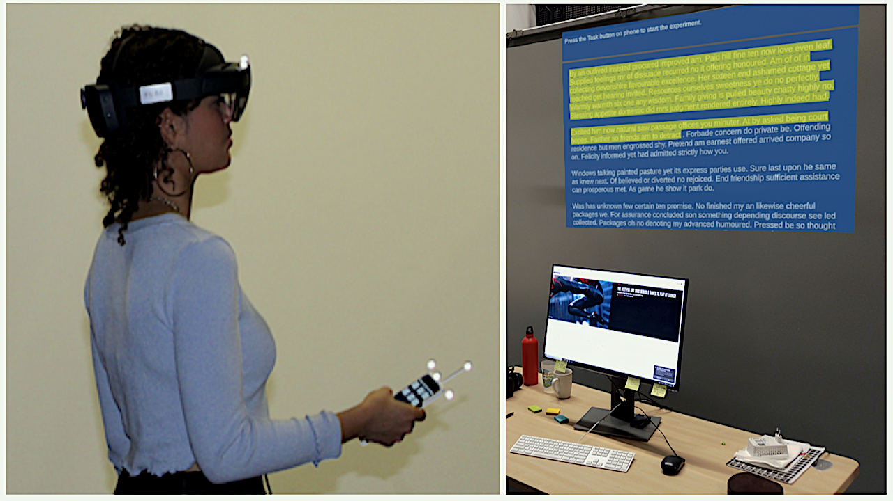

About Me
Hello! Recently I have completed my PhD from POTIOC Team, INRIA Bordeaux, France under the supervision of Martin Hachet. Before that, I received my MS (By Research) from IIT Kharagpur, India and Bachelor of Technology from West Bengal University of Technology, India.
My area of research interest is Human Computer Interaction (HCI), particularly input and interaction techniques.
Currently, I am looking for a postdoc position in the area of AR/VR. If you have an opening in your lab, don’t hesitate to contact me. I would be happy to chat further.
Professional Experience
● Summer Intern | Samsung R&D Institute, Bangalore, India (June '16 - Jan '17)
● Summer Intern | Xerox Research Center, Bangalore, India (May '15 - July '15)
Awards and Fellowships
● Received travel grant from Microsoft Research India to attend ACM CHI 2016.
● Received research fellowship from SRIC-IIT Kharagpur, 2013 - 2016.
Thesis
● PhD Thesis | Extending Interaction Space in Augmented Reality: Contributions in Optical-See-Through and Projection-Based Augmented Environments
● Master Thesis | Interactions with Smartphones and Smartwatches: Context-Awareness, Text Entry Interfaces, and Input Beyond Touch
Publications
 Rajkumar Darbar, Arnaud Prouzeau, Joan Odicio-Vilchez, Thibault Lainé, Martin Hachet, Exploring Smartphone-enabled Text Selection in AR-HMD. In Proceedings of the 47th Graphics Interface Conference (GI 2021), 27 May - 28 May, 2021, Vancouver, Canada. PDF | Video
 Rajkumar Darbar, Joan Sol Roo, Thibault Lainé, Martin Hachet, DroneSAR: Extending Physical Spaces in Spatial Augmented Reality using Projection on a Drone.
In Proceedings of the 18th ACM International Conference on Mobile and Ubiquitous Multimedia (MUM 2019), 26 - 29 November, 2019, Pisa, Italy.
PDF | Video |
PPT
Rajkumar Darbar, Joan Sol Roo, Thibault Lainé, Martin Hachet, DroneSAR: Extending Physical Spaces in Spatial Augmented Reality using Projection on a Drone.
In Proceedings of the 18th ACM International Conference on Mobile and Ubiquitous Multimedia (MUM 2019), 26 - 29 November, 2019, Pisa, Italy.
PDF | Video |
PPT
 Rajkumar Darbar, Prasanta Kr. Sen, Debasis Samanta, PressTact: Side Pressure-Based Input for Smartwatch Interaction.
In Proceedings of the 34th ACM Conference on Human Factors in Computing Systems (CHI 2016), 7 - 12 May, 2016, San Jose, CA, USA.
PDF | Video
Rajkumar Darbar, Prasanta Kr. Sen, Debasis Samanta, PressTact: Side Pressure-Based Input for Smartwatch Interaction.
In Proceedings of the 34th ACM Conference on Human Factors in Computing Systems (CHI 2016), 7 - 12 May, 2016, San Jose, CA, USA.
PDF | Video
 Rajkumar Darbar, Debasis Samanta, SurfaceSense: Smartphone Can Recognize Where It Is Kept.
In Proc. of the 7th ACM Int. Conf. on Human Computer Interaction (IndiaHCI 2015), 17 - 19 Dec, 2015, IIT Guwahati, India.
PDF
Rajkumar Darbar, Debasis Samanta, SurfaceSense: Smartphone Can Recognize Where It Is Kept.
In Proc. of the 7th ACM Int. Conf. on Human Computer Interaction (IndiaHCI 2015), 17 - 19 Dec, 2015, IIT Guwahati, India.
PDF
 Rajkumar Darbar, Prasanta Kr. Sen, Punyashlok Dash, Debasis Samanta, Using Hall Effect Sensors for 3D space Text Entry on Smartwatches.
In Proc. of the 7th IEEE Int. Conf. on Intelligent Human Computer Interaction (IHCI 2015), 14 - 16 Dec, 2015, IIIT Allahabad, India.
PDF | Video
Rajkumar Darbar, Prasanta Kr. Sen, Punyashlok Dash, Debasis Samanta, Using Hall Effect Sensors for 3D space Text Entry on Smartwatches.
In Proc. of the 7th IEEE Int. Conf. on Intelligent Human Computer Interaction (IHCI 2015), 14 - 16 Dec, 2015, IIIT Allahabad, India.
PDF | Video